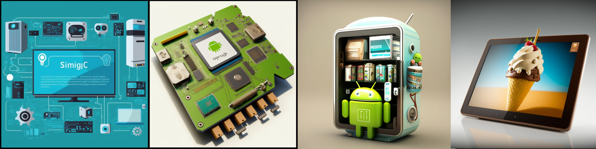
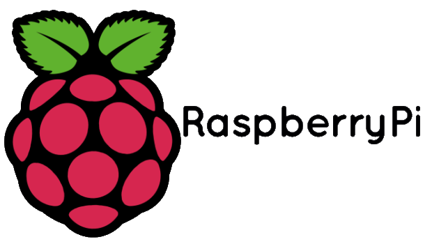

Introducing Mayqueen Technologies, a cutting-edge startup founded in 2015 with a focus on ARM-based edge computing devices. Our core value lies in providing customized featured Android OS, combining the power of open source technology to help our customers quickly bring their ideas to life and bring them to market.
At MayQueen, we believe in empowering our customers with the ability to tailor their device to fit their unique needs. Our team of experts works closely with each customer to understand their vision and provide a customized solution that exceeds their expectations.
Our commitment to open source technology allows us to continuously innovate and provide our customers with the latest in edge computing advancements. We believe that by combining the power of customization and open source, we can create truly unique and impactful devices that make a difference in the world.
So, if you're looking for a partner who can help bring your edge computing ideas to life, look no further than MayQueen. Contact us today to learn more about how we can help make your vision a reality.
Contact
- email: sales@mayqueentech.com
- UK office: 54 Stewart street, Nuneaton, Warwickshire, CV11 5SA, UK
- Taiwan office: 8F., No. 110, Xianfu Rd., Taoyuan Dist., Taoyuan City, Taiwan (R.O.C.)
Custom Service (24-hours FAE Q & A)
- Community: Discord forum (need purchase our product)
News
Partners
